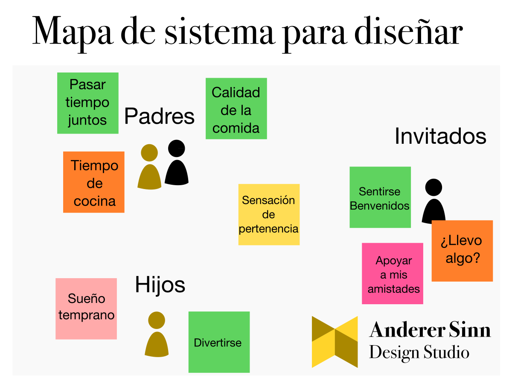

Cómo usar un prototipo para maximizar el aprendizaje
Elaborar un prototipo puede tomar entre días y semanas según el tipo de innovación que esté desarrollando. Idealmente, al final del proceso, el objetivo fundamental es adquirir aprendizajes útiles para continuar desarrollando la innovación. Pero, sin una noción de estrategia básica el ejercicio puede resultar en un desperdicio de recursos y esfuerzos.
Peor aún, en cada disciplina se usa la palabra "prototipo" con significados diferentes. Esto puede generar confusiones. Perder de vista lo fundamental para cada caso es un error que afecta la efectividad de cualquier prueba de validación.
Con este artículo usted aprenderá las diferentes formas en las que se puede aplicar un prototipo. Además, entenderá exactamente cómo orientar una prueba de validación de manera estratégica, en lugar de construir un modelo y lanzarlo al mundo esperando que de frutos.
1. Identifique lo que quiere validar: modelo o técnica
De las diferentes disciplinas que emplean prototipos se pueden recoger dos grandes formas de entenderlos.
Prueba de modelo: prototipo de campo
Antes de crear cualquier artefacto en un proceso de innovación, es recomendable que usted como diseñador o diseñadora busque representar, así sea en una servilleta o en un muro lleno de notas adhesivas, un mapa del sistema completo de alguna manera. Esto significa, hay que identificar a las personas afectadas por el diseño, sus apuestas y valores, sus capacidades de interacción entre sí, sus pensamientos y creencias, etc.
Una vez tenga un mapa de lo que usted considere importante para el diseño, será más claro pensar qué tipo de creaciones pueden ser significativas y funcionales para la población objetivo.

Sin embargo, este mapa es sólo una representación llena de sus mejores esfuerzos por entender al sistema y empatizar con las personas. Es recomendable validar este tipo de intuiciones sobre su público. Para esto utilizamos modelos que pueden ser prototipos de papel estructuras de cartón tridimensionales, simples dibujos, etc.
Una prueba de modelo busca verificar si la interacción de las personas con su diseño es la esperada o es sorprendente. En esta etapa, usted puede volver y revisar si aprendió algo nuevo sobre las personas y la forma en la que se relacionan con el mundo. Una prueba de modelo busca aprender sobre la gente, no sobre el prototipo.
Pro tip: no tiene que validar un diseño en esta etapa. Mejor identifique una característica de la población sobre la cuál le gustaría aprender más, y construya el modelo para estimular la reacción de las personas. Por ejemplo: "¿Qué tan familiarizada está mi población con esta nueva tecnología?" puede validarse mostrándoles fotos de productos que ya existen como desencadenantes de conversación.
Prueba técnica: proof of concept
La primera vez que escuché el término "proof of concept" (prueba de concepto) en ingeniería quedé desconcertado. La idea de una prueba técnica, como la llamaré aquí, es comprobar que una tecnología es factible de aplicar y de implementar. En ese momento pensé "no tiene sentido preguntarse si es posible implementar una tecnología que ya existe." Pero, la experiencia me fue mostrando.
El objetivo de una prueba técnica es comprobar que con nuestros recursos y nuestra experiencia como organización somos capaces de implementar una tecnología dada.
Que en el MIT se haya construido un robot exclusivamente con inflables no prueba que su equipo pueda implementarlo con los recursos, experiencia y materiales que tiene aquí. Un prototipo de prueba técnica busca generar aprendizajes sobre la tecnología, no sobre las personas.
El estudio Rusty Squid tiene un equipo maestro en ejecución de pruebas técnicas (y de campo también). Este video ilustra en un par de minutos su proceso de prototipado técnico para el diseño de robots.
2. Seleccione las técnicas apropiadas
Según el tipo de prueba de validación en que esté pensando, usted puede considerar técnicas de muchas naturalezas. Tenga en cuenta que es igual de importante que la elaboración del prototipo, hacer un análisis y una reflexión posterior sobre los aprendizajes de la prueba. Considere lo siguiente:
Si va a hacer prueba de campo, probablemente deberá reunir a un grupo de personas o interactuar con individuos. Identifique qué detonantes pueden generar reacciones más enriquecedoras para su aprendizaje. Algunas actividades que puede usar incluyen:
Organizar imágenes en una mesa según algún criterio
Cartografía social
Conversación y votaciones alrededor de dos modelos
Construcción de definiciones colectivas
No se limite por estas actividades, desarrolle la dinámica como se sienta en mayor comodidad y como le parezca que puede desencadenar conversaciones enriquecedoras.
Del mismo modo, si usted planea hacer una validación técnica, lo mejor es que seleccione componentes específicos que busca implementar. Construya prototipos simples. Según la tecnología puntual que desee probar, las técnicas son muy variadas, pero en general fíjese en información como:
Cuánto costó construir el prototipo
Cuánto tiempo tomó la elaboración
Qué partes del proceso podrían ejecutarse de una manera distinta para hacerlo más eficiente o más eficaz
Qué dificultades enfrenta y qué alternativas locales o más cercanas a su organización podría emplear para superarlas
La guía paso a paso para innovar productos de Anderer Sinn
Consulte nuestra guía para integrar las pruebas de validación a todo el resto del proceso de innovación, de principio a fin:
Por último, tenga en cuenta que no todos los actores de innovación deben participar en todas las pruebas de prototipado y validación que usted ejecute. Reflexione primero sobre qué personas pueden generarle más aprendizajes según lo que busca validar.
Esto quiere decir que una prueba de validación técnica no requiere organizar un grupo de trabajo de campo. En lugar de eso, convocar a su equipo y organizar un cronograma de prototipado y evaluación puede ser lo mejor.
Del mismo modo, si lo que busca es construir un aprendizaje sobre su mapa al rededor del diseño, tal vez un grupo de sujetos en campo le pueda ser útil. No todo el equipo tiene que estar presente en la actividad.
Sea cualquiera el caso, recuerde organizar una reunión con el resto de su equipo que le permita descargar los aprendizajes de la actividad para que cada persona esté enterada de modo que las observaciones puedan discutirse y reflejarse en todos los aspectos del desarrollo posterior de la innovación.
Conclusión
Hacer prototipos es sólo una parte de implementar una prueba de validación completa. Al rededor del prototipo debe haber un objetivo claro de validación, y unas actividades de desarrollo y evaluación que le permitan generar aprendizajes útiles.
Nunca se complique. Mientras más simple sea el prototipo más eficientemente podrá validar y continuar con su proceso, y podrá generar innovaciones de mejor calidad al final, dado su presupuesto.
Tengamos una reunión
En Anderer Sinn trabajamos estratégicamente para sacar el máximo aprendizaje de cada prototipo. Tome un momento para revisar nuestra página o compartir a quien pueda ser útil este material.